Необходимо полностью изучить инструкцию перед тем, как приступать к её выполнению.
С помощью этой инструкции можно принять на склад любой товар.
Словарь терминов
Транзакция. Задаёт сценарий работы с принимаемыми паллетами/товарами, а именно: куда будет расставляться товар - в зону хранения или в отборки, будет ли печататься паллетный лист, может определять зону склада, в которой должен быть расставлен товар и прочее.
Паллетная наклейка. Представляет из себя наклейку со штрихкодом, которая клеится на паллету и в дальнейшем позволяет отслеживать товар принадлежащий этой паллете. Имеет смысл использовать только в том случае, если товар после приёмки не сразу расставляется на стеллажи.
Паллетная бирка. Информационный лист, который содержит наименование, срок годности, количество и небольшой комментарий о том, откуда и кто этот товар принимал. Также содержит штрихкод паллетной наклейки и товара. Штрихкоды на бирке и наклейке обязательно должны совпадать.
ТСД. Или терминал сбора данных. Или просто терминал. Переносное устройство размером с большой телефон и сканером штрихкодов.
Подготовка документов
Закрыть все лишние окна программы. Это позволит не запутаться и понимать свои действия.
Если товар после приёмки по ВМС не сразу будет расставляться на стеллажи, то необходимо проверить наличие достаточного количества паллетных наклеек, по одной на каждый паллет с небольшим запасом. Распечатать их, если не хватает (см. инструкцию "Печать паллетных наклеек"). При создании документа нужно выбрать транзакцию «102 - Приём целых паллет с наклейками».
Взять терминал сбора данных и зарегистрировать его на себя.
В том случае, если на филиале принимать и расставлять товар будут 2 разных человека, и если товар будет сразу расставляться, то зарегистрировать терминал водителя погрузчика. При этом на других терминалах водителей погрузчиков в системе зарегистрировано быть не должно.
Создание документов
Нажать кнопку «Приход» в верхнем меню.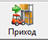
Откроется окно создания нового документа. В нём нужно заполнить следующие поля в соответствии с одним из сценариев. После заполнения полей перейти к пункту «3»:
Приём товара от поставщика с документами по одной ТТН:
Транзакция. «111 – Приём целых паллет без наклеек» или «102 - Приём целых паллет с наклейками» или «112 - Приём целых паллет без бирок, без наклеек».
Ожидаемый приход. Выбрать ожидаемый приход из списка. Искать ожидаемый приход удобнее всего по полю таблицы «Комментарий».
Если ожидаемых приходов несколько, то выбрать любой один из них.
Если на момент создания документа прихода, из 1С не был выгружен ожидаемый приход, тогда ожидаемый можно будет добавить позднее.
Комментарий. Нужно указать тип и номер транспорта, доставивший товар, дату приёма и фамилию принимающего кладовщика.
Номер и тип транспорта. На вкладке «Логистика» нужно выбрать один из типов транспорта и указать его номер.
Приём товара от поставщика с документами по нескольким ТТН:
Заполнить все поля по инструкции для одной ТТН.
Сохранить документ.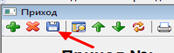
Дополнительные ожидаемые приходы. На вкладке «Логистика» найти таблицу «Несколько ожидаемых приходов» и нажав на кнопку «Добавить» внести недостающие ожидаемые приходы.
Приём товара от поставщика без документов (в том числе МСП):
Транзакция. «111 – Приём целых паллет без наклеек» или «102 - Приём целых паллет с наклейками» или «112 - Приём целых паллет без бирок, без наклеек».
Поставщик. Выбираем поставщика продукции.
Комментарий. Нужно указать транспорт, дату приёма и фамилию принимающего кладовщика.
Номер и тип транспорта. На вкладке «Логистика» нужно выбрать один из типов транспорта и указать его номер.
Приём мелких возвратов товаров на склад.
Транзакция. «108 - Возврат из торговой точки»:.
Поставщик. Выбрать поставщика «Возврат».
Комментарий. В двух словах написать откуда принимается товар. Дописать дату и фамилию принимающего кладовщика.
Ожидаемый приход. При выборе танзакции «108» в списке ожидаемых будут отображены документы «Возврат»
Комментарий. Написать «Размещение переупаковки». В конце поставить дату и фамилию принимающего кладовщика.
Документ заполнен. Теперь его надо сохранить. Для этого нажать кнопку «Сохранить» в виде дискеты. (Третья слева), либо кнопку «Применить» в нижнем правом углу окна программы.
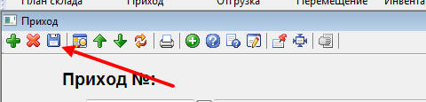
Нажать кнопку «Приёмка с ТСД» в нижнем левом углу документа. Если кнопка не активна, значит не был выполнен один из предыдущих пунктов этого раздела. Нажатие на эту кнопку создаёт приказ на приёмку товара.
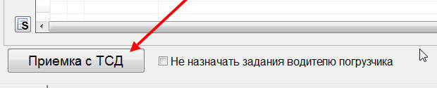
Если не требуется назначать задания для водителя погрузчика, то поставьте галочку «Не назначать задания водителю погрузчика» и ещё раз сохраните документ.
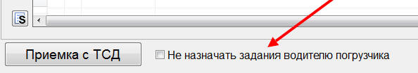
Выбор принтера.
При создании документа – «Приход», есть возможность вручную указать принтер для печати паллетных бирок:
Нажимаем на кнопку, указанную ниже.
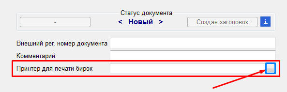
Откроется «Классификатор принтеров»
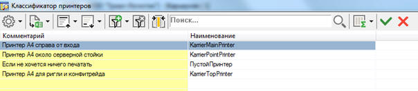
Выбираем нужный принтер по комментарию или по названию двойным нажатием ЛКМ.
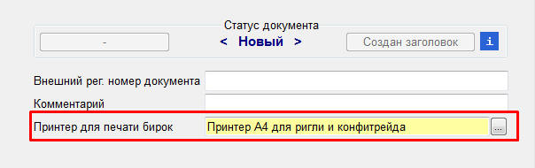
Сохраняем изменения и теперь все паллетные бирки будут распечатываться на выбранный принтер.
Выбор карщика для размещения товара.
Для того, чтобы задания на размещение принятого товара автоматически назначались на терминал карщика, нужно выбрать его в поле «Терминал для размещения».
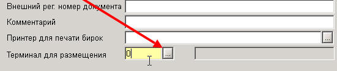
Назначение заданий на терминалы
Следующим шагом нужно перейти в «Диспетчер терминалов». Нажать кнопку 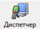 в верхнем меню.
В открывшемся окне в левой части можно увидеть не назначенные задания, а в правой готовые к работе терминалы.
Среди не назначенных заданий (в левой части диспетчера) нужно отыскать интересующие. Проще всего это сделать по комментарию. Он отображается для каждого задания.
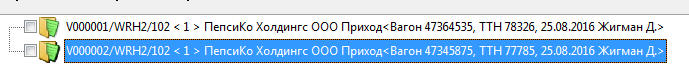
Для назначения задания на терминал нужно отметить галочкой задание, затем отметить терминал и нажать кнопку «Послать на терминал» 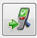
Чтобы забрать задание с терминала нужно отметить галочкой терминал и нажать кнопку «Удалить с терминала»
Принимать товар обязательно должен кладовщик или завсклад.
Назначение заданий на терминалы
В том случае, если была выбрана транзакция «102 - Приём целых паллет с наклейками» нужно на каждую принимаемую паллету наклеить паллетную наклейку. Для остальных транзакций наклейки не нужны. Товар принимается следующим образом:
Нормальный товар в целых упаковках принимается на склад со статусом «N».
Нормальный товар, подлежащий переупаковке складывается на отдельную паллету. Его также нужно принять до передачи переупаковщику со статусом «N».. Водитель погрузчика должен переместить этот товар в ячейку переупаковщика.
Мятые упаковки (брак) складываются на отдельную паллету и после приёмки основного товара принимаются на склад со статусом «Q».
Бой складывается на ещё одну отдельную паллету и после приёмки нормального товара принимается со статусом «B».
Выполнение приёма с терминалом сбора данных.
Если выбрана транзакция «102 - Приём целых паллет с наклейками», то первым делом наклеиваем и сканируем паллетную наклейку. Для остальных транзакций наклеивание и сканирование паллетной наклейки не требуется.
Сканируем штрихкод товара.
Внести информацию о количестве товара.
Выбрать правильную фасовку (ящик, упаковка или штука). В зависимости от того, какой штрихкод был отсканирован (ящика, упаковки или штучки) здесь будет выбрано соответствующее значение.
Если товар разбит или не подлежит дальнейшей продаже, то в поле «Статус» следует выбрать «B». Для брака и претензионного товара следует выбрать статус «Q». При сканировании товара сюда всегда вставляется значение «N»
Ввести дату окончания срока годности. В некоторых случаях требуется ввести дату производства. Дату следует вводить даже для боя и брака.
Если на одной паллете находятся одновременно упаковки и штучки, либо несколько наименований товара, то после ввода всех данных для одной фасовки следует нажать кнопку «Добавить» и повторить ввод начиная с первого пункта. В остальных случаях следует нажимать кнопку «Закрыть тару».
Если товар принимается по транзакции «102 - Приём целых паллет с наклейками» или «111 – Приём целых паллет без наклеек», то складской принтер распечатает паллетную бирку. После получения паллетной бирки необходимо проверить введённые значения. Обратить внимание следует на наименование товара, срок годности и количество упаковок и штучек. Особое внимание следует обращать на товар, если для него существует «двойник» (например, чипсы Лейз в обычной упаковке или ДСП). Если обнаружилась ошибка, то её можно исправить, но только в том случае, если водитель погрузчика ещё не поставил паллету в стеллаж (смотри раздел Исправление ошибок при приёме).
После завершения приёма всех паллет, брака и боя на терминале выбираем пункт «Меню – Завершить приёмку». Если для документа был выбран ожидаемый приход, то появится таблица сравнения. В ней будут указаны недостачи и излишки товара. Если всё верно, то ещё раз нажимаем на кнопку «Завершить».
Исправление ошибок при приёме
Если при вводе данных на терминале была допущена ошибка (неверно выбрана упаковка, статус, срок годности или количество товара), то эти данные можно исправить, но только до того момента, пока водитель погрузчика не поставит товар в стеллаж. Выполняем следующие действия:
Паллетную бирку с ошибочными данными необходимо снять с паллета и уничтожить. Паллетную наклейку оставляем, если она используется.
Открыть «Диспетчер терминалов».
В правой части диспетчера среди терминалов найти водителя погрузчика, которому назначаются задания.
Нажимая на «+» рядом с его терминалом развернуть список приказов.
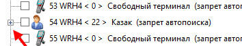
Найти в списке приказов ошибочный. Если найти ошибочный приказ не представляется возможным, то можно подождать до тех пор, пока водитель погрузчика не расставит правильно принятые паллеты. В этом случае у него среди заданий останутся только ошибочные паллеты. Во время ожидания расстановки можно продолжать приёмку других паллет.
После нахождения ошибочного приказа его следует отметить галочкой и с помощью кнопки «Удалить с терминала» переместить приказ с правой части в левую часть диспетчера. Помните, что отмечать галочкой следует не водителя погрузчика, а именно ошибочно заполненные приказы.
Затем, нужно найти приказ с ошибкой уже в левой части диспетчера, нажать на него правой кнопкой мыши и выбрать пункт меню «Удалить».
Открыть документ прихода. Для этого нужно найти свой терминал в правой части диспетчера, с помощью кнопки «+» развернуть список заданий (1), нажать на задании левой кнопкой мыши (2) и выбрать пункт «Свойства» (3).
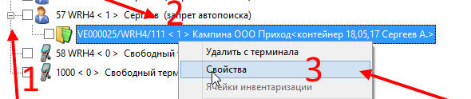
Откроется документ прихода. В нём, в таблице нужно найти ошибочно введённую строку. Отметить её галочкой и нажать на кнопку с синим крестиком слева от таблицы 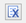 Кнопка называется «возвратить из буфера». Если верно были выполнены все предыдущие пункты, то шрифт строки станет синего цвета и её можно будет отредактировать, либо удалить.
Для удаления нужно нажать правой кнопкой мыши на строку и выбрать пункт меню «Удалить строку» и затем обязательно сохранить документ.
Для редактирования нужно нажать левой кнопкой мыши на поле «Кол-во»,«ЕИ» или «Срок годности» для корректировки количества, фасовки или даты окончания срока годности соответственно и внести правильные значения. После редактирования необходимо сохранить документ, отметить строку галочкой и нажать на кнопку с красным крестиком слева от таблицы «поместить в буфер». Строка снова станет красного цвета, водителю погрузчика автоматически назначится задание, а на экран выведется новая, исправленная паллетная бирка, которую нужно будет вручную распечатать.
Размещение товара.
Товар может быть размещён на стеллажах сразу после приёмки кладовщиком. Для того чтобы водитель погрузчика получал задания на размещение в момент приёмки товара следует зарегистрировать в системе его терминал ДО НАЧАЛА ПРИЁМКИ. Для размещения товара водитель погрузчика должен выполнить следующие шаги:
Если товар принимается по транзакции «111 – Приём целых паллет без наклеек» или «102 – Приём целых паллет с наклейками», то сканировать нужно большой штрихкод паллетной бирки или штрихкод паллетной наклейки. Водитель погрузчика не должен брать паллеты без паллетных бирок.
Если транзакция выбрана другая, то сканировать надо непосредственно штрихкод товара.
После сканирования штрихкода будет предложена ячейка, в которую товар нужно поместить. Если эта ячейка по каким-либо причинам не устраивает, то можно отсканировать любую другую ячейку и поставить в неё товар.
Если товар размещается не в момент приёмки или водитель погрузчика был зарегистрирован в системе уже после того, как кладовщик начал принимать товары, то задания на размещение накапливаются в левой части диспетчера терминалов. Эти задания имеют в конце пометку [Размещение]. Их следует назначить тому, кто будет расставлять товары на стеллаж.
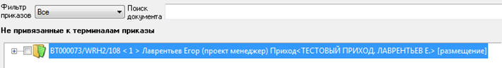
Акт прихода
Для начала следует заполнить некоторые поля документа. Для этого переходим на вкладку «Логистика».
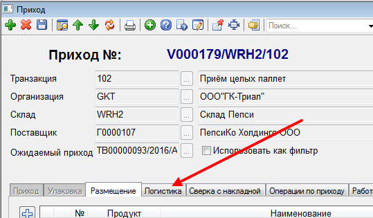
И начинаем заполнять поля, отмеченные стрелочкой на рисунке ниже:
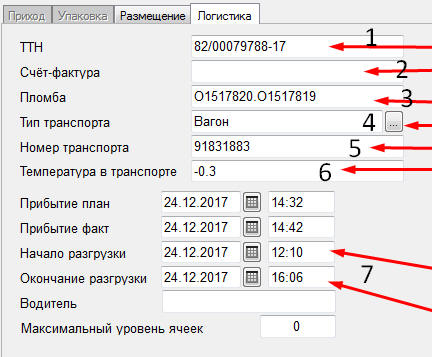
Номер ТТН. Если выбран ожидаемый приход, то заполнять не нужно.
Номер счёт-фактуры. Если выбран ожидаемый приход, то заполнять не нужно.
Пломба. Если пломбы нет, то заполнять не нужно
Транспорт. Выбираем тип транспорта из предложенных.
Номер транспорта (Вагон, номер фуры или номер контейнера)
Температура в транспорте (для зимнего периода).
Дата и время начала и окончания работы с товаром. Дата начала также будет отображена в заголовке акта прихода.
Обязательно сохраняем документ после внесения данных.
Чтобы распечатать акт прихода нужно выполнить следующие действия:
Открыть интересующий документ и нажать в нём кнопку «Печать».
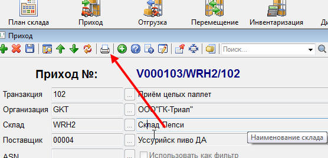
В появившемся списке найти пункт «Акт прихода» и нажать его.
Заполненный акт прихода будет выведен на экран. Здесь его можно распечатать нажатием на кнопку «Печать»
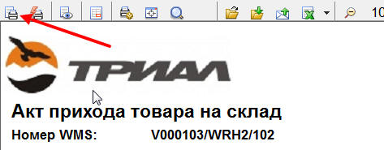
В том случае, если после вывода на экран акта прихода становится понятно, что неправильно был выбран ожидаемый приход (слишком большие излишки и недостачи), или есть необходимость добавить дополнительные ожидаемые приходы, то выполняем следующие действия:
Перейти на вкладку «Логистика» документа «Приход»
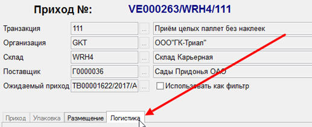
Найти таблицу «Несколько ожидаемых приходов».
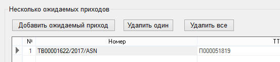
Для удаления «лишних» ожидаемых приходов из документа можно воспользоваться одной из следующих кнопок:
«Удалить один». Удаляет текущий выбранный ожидаемый приход из таблицы.
«Удалить все». Удаляет из все ожидаемые приходы из таблицы.
Для добавления ожидаемых приходов использовать кнопку «Добавить ожидаемый приход»
4. Сохранить документ. Кнопка «Применить» может быть неактивна, поэтому будет лучше воспользоваться кнопкой «Сохранить» в верхнем левом углу окна документа 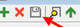
Точно также можно заменить ожидаемые приходы в документе в том случае, если пришло 2 и более вагонов (машин), в которых ещё у поставщика были перепутаны документы.
Блокировка ячеек прихода.
Если по каким-либо причинам товар не должен уходить со склада, (например, Алкогольная продукция принимается на склад, однако нет подтверждения от системы ЕГАИС, и из-за этого принятый товар не может быть отгружен клиентам.
В этом случае, надо заблокировать ячейки, куда разместится товар. Для этого: зайти на вкладку «Логистика» и нажать на кнопку «Заблокировать ячейки размещения». Сделать это можно как перед началом приёмки, так и после, однако блок начнёт действовать только тогда, когда товар будет поставлен в стеллажи (строки чёрного цвета).
После получения подтверждения от ЕГАИС, необходимо зайти в приход и снять блок с ячеек – вкладка «Логистика», затем нажать на кнопку «Снять блокировку с ячеек».
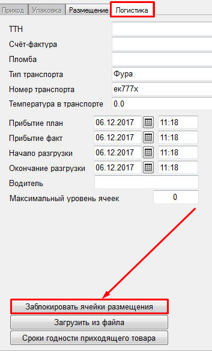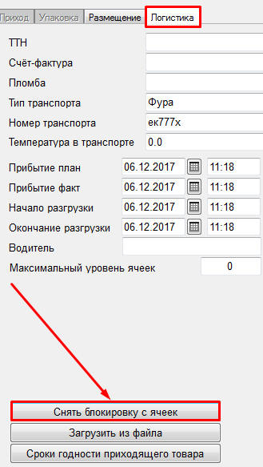
Данные о заблокированных приходах, будут отображаться в отчёте по «Самодиагностике».
Учёт сдельной оплаты сотрудников.
Для учёта сдельной оплаты сотрудников при приёмке «Приходов» и «Переупаковки» в документа прихода необходимо сделать следующее:
Перейти на вкладку «Работа сотрудников».
Добавить сотрудников, участвовавших в приёмке. Для этого нажимаем кнопку «Добавить сотрудника»
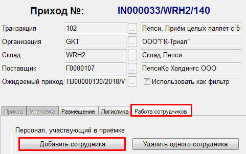
Из выпадающего списка выбираем сотрудника, участвовавшего в приёмке.
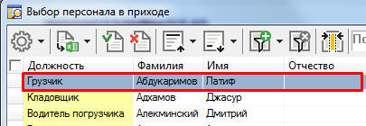
Выбранный сотрудник отобразится в списке «персонала, участвующего в приёмке».
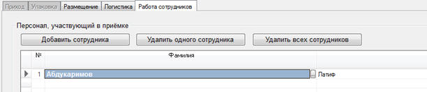
При необходимости убрать сотрудника из этого списка, сделать это можно соответствующими кнопками «Удалить одного сотрудника» или «Удалить всех сотрудников».
Далее для выгрузки данных о работе сотрудников в 1С (где непосредственно и ведутся все расчёты по сдельной оплате труда) необходимо «Закрыть» документ, нажав кнопку «Закрыт» в правом верхнем углу документа прихода.
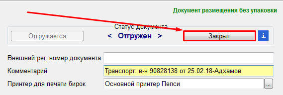
После перевода документа на статус «Закрыт», этот документ не будет возможности корректировать каким-либо образом, поэтому перед тем как нажимать кнопку «Закрыт» надо проверить правильность всех внесённых данных в документе.
Частые вопросы.
При приёмке товара: Продукт с EAN-кодом не найден, введите продуктовый код?
С систему не занесён сканируемый штрих код. Для дальнейшей работы необходимо его внести. Путь к соответствующей инструкции: «Bitrix24 – Инструкции ВМС - 4) Складские операции – 1) Внесение штрих кодов с помощью терминала сбора данных».
Как открыть документ прихода? Существует 2 варианта:
Если в данный момент выполняется приёмка товаров, то проще всего открыть документ прихода через диспетчер. Для этого нужно найти свой терминал в правой части диспетчера, с помощью кнопки «+» развернуть список заданий, нажать на задании левой кнопкой мыши и выбрать пункт «Свойства».
Второй вариант можно выполнять в любой момент времени:
Нажать на кнопку «Приход»
Ничего не меняя нажать кнопку «Листать записи»
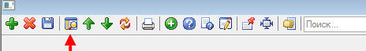
Перейти в самый низ открывшейся таблицы.
По колонке комментарий, отыскать интересующий документ.
Нажать на него 2 раза левой кнопкой мыши.
Я принял паллету, водителю погрузчика пришло задание на размещение, а паллетная бирка не вышла из принтера.
Что сделать?
Проверить наличие бумаги и картриджа в принтере.
Открыть документ прихода.
Найти в таблице строку документа для которого не распечаталась паллетная бирка (Она должна быть красного цвета).
Найти колонку «Команда» и в этой строке нажать на неё 2 раза левой кнопкой мыши. В появившемся меню выбрать пункт «Печать этикетки (текущая строка)».
Откроется печатная форма, которую нужно распечатать вручную.
Если форма попрежнему не печатается, то, вероятно, принтер не работает.
Что не делать?
Не нужно принимать эту паллету ещё раз.
Я принял паллету, но в диспетчере терминалов нет задания на размещение.
Что сделать?
Проверить, в сети ли терминал кладовщика и водителя погрузчика. Для этого обращаем внимание на иконку статуса. Она должна быть зелёного цвета.
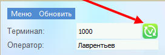
Если иконка имеет вид отличный от приведённого на снимке, то есть какие-то проблемы с сетью. Можно несколько раз нажать на кнопку «Обновить». Затем можно попробовать перезагрузить терминал сбора данных. Если не заработает, то, возможно, возникли какие-то проблемы с сервером. Прежде чем пробовать остальные варианты, нужно восстановить связь.
Проверить все терминалы в диспетчере на предмет наличия у них этого задания.
Проверить наличие задания на размещение в левой части диспетчера.
Если предыдущие 2 пункта не помогли, то открываем документ прихода. Находим строку, для которой нет задания на размещение и пытаемся вернуть строку из буфера Если появится сообщение о том, что для данной строки есть приказ на размещение, значит нужно внимательнее искать задание на размещение в диспетчере терминалов. Если же строка стала синего цвета, то значит, что задания действительно в диспетчере нет. Для создания задания на размещение просто помещаем строку в буфер
Что не делать?
Не нужно принимать эту паллету ещё раз, пока не убедимся, что паллета действительно не принята.